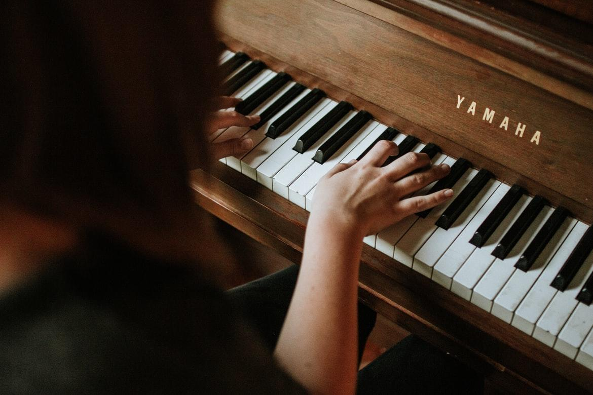

El Piano, es un instrumento musical creado en el año 1700 D.C, por el Paduano Bartolomeo Cristofori, está compuesto por una caja de resonancia a la que se ha agregado un teclado mediante el cual se percuten las cuerdas de acero con martillos forrados de fieltro, lo que produce el sonido. Las vibraciones se transmiten a través de los puentes a la tabla armónica, que las amplifica. Está formado por un arpa cromática de cuerdas múltiples, accionada por un mecanismo de percusión indirecta, a la que se le han añadido apagadores.
Entre sus antecesores se encuentran instrumentos como la cítara, el monocordio, el dulcémele, el clavicordio y el clavecín (del que deriva la forma, pero no la mecánica).
A lo largo de la historia han existido diferentes tipos de pianos, pero los más comunes son el piano de cola y el piano vertical o de pared. La afinación es un factor primordial en la acústica del instrumento y se realiza modificando la tensión de las cuerdas de manera que estas vibren en las frecuencia adecuadas.

En la musíca occidental, el piano se puede utilizar para la interpretación solista, para el acompañamiento, para ayudar a componer y para ensayar. Las primeras composiciones específicas para este instrumento surgieron alrededor del año 1732; entre ellas destacan las doce sonatas para piano de Lodovico Giustini tituladas Sonate da cimbalo di piano e forte detto volgarmente di martelletti. Desde entonces, muchos han sido los compositores que han realizado obras para piano y en muchos casos esos mismos compositores han sido pianistas. Destacan figuras como Frédéric Chopin, Franz Liszt, Wolfgang Amadeus Mozart, Ludwig Van Beethoven etc. Fue el instrumento representativo del romanticismo musical y ha tenido un papel relevante en la sociedad, especialmente entre las clases más acomodadas de los siglos XVIII y XIX.